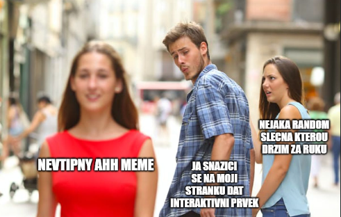

Mně nebo mě?
Zájmena „mně" a „mě" si lidé často pletou. Jak si to zapamatovat?
Posílám to mně na server, je to safe.
Mě to nefunguje, ten exploit padá
Posílám to mě na server, je to safe.
Mně to nefunguje, ten exploit padá
💡 Tobě → mně | Tebe → mě
Dáš to m__? → Pepovi → mně
Podle m__ → Pepy → mě
Za m__ fajn. → Pepu → mě
M__ se to líbilo. → Pepovi → mně
💡 Pokud ti trik s tebe/tobě nejde do hlavy, nahraď si zájmeno jménem - třeba Pepou. Koncovka má 1 písmeno → mě. Má 3 písmena → mně.
